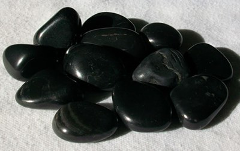

Jasper Black
Information
Black Jasper is also known as Basanite or Blackstone. It's one of the least common Jasper yet one of the most sought after. Black Jasper can be found in Russia, India, Indonesia, Kazakhstan, Venezuela, Australia, Brazil, Egypt, Uruguay, Madagascar, and the USA.
Black Jasper is a highly protective stone that is excellent for grounding the energies of people who may experience being off with the fairies. It can also help in earthing higher vibrations. In physical healing Black Jasper is useful at relieving pain, stomach ailments and problems with the feet. It will give you protection from danger, bad spells, and harmful energies It will also keep you safe, especially when you work in high-risk occupations.
Health Benefits
You can find here some Healing Properties.
Outfits